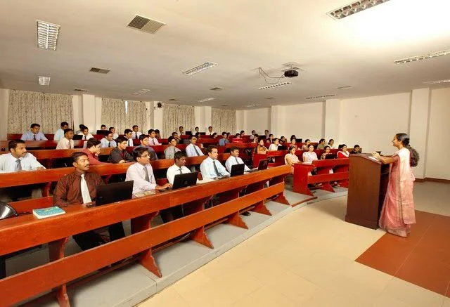

SSET offers 9 undergraduate and 6 postgraduate programs in Engineering, and Technology. The institution provides core engineering courses alongside trending programs such as Data Science and AI. Our comprehensive curriculum ensures students are well-equipped for the future.
SSET is a premier institution, upholding a tradition of excellence for over 48 years within the esteemed SCMS Group of Educational Institutions. Established in 2001 under Mahatma Gandhi University, SSET is the pioneering self-financing engineering college. SSET offers technical programmes recognised by AICTE , New Delhi and is affiliated to APJ Abdul Kalam Technological University , Kerala.
Located on a sprawling 29-acre campus in Karukutty, Ernakulam District, our cutting-edge facilities are the cornerstone of a transformative learning experience. With 50% of our branches accredited by the NBA, a remarkable NAAC grade maintained for 10 years, and two highly acclaimed Centers of Excellence—the SCMS Water Institute (SWI) and the SCMS Institute of Road Safety and Transport (SIRST)—SSET offers a gateway to innovation and social commitment.
kjkxffgfvghjn
jdfbfjdfgdgjnkjdfgbjgkgfgn